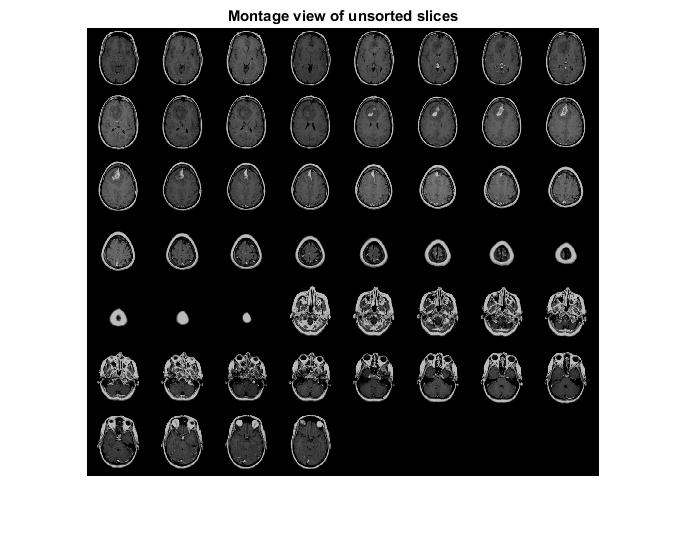
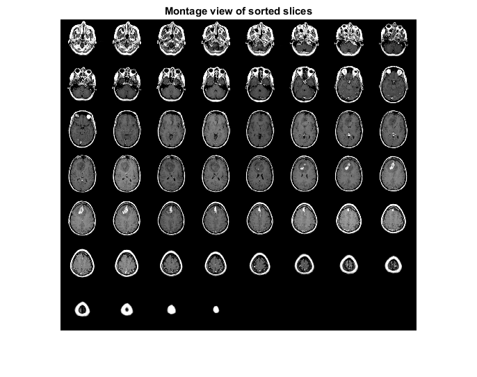
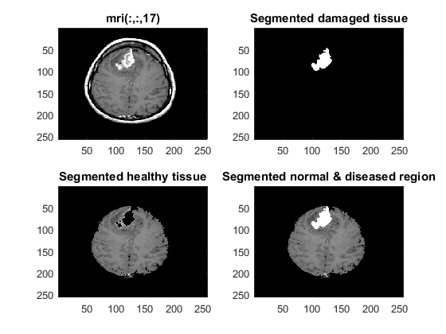
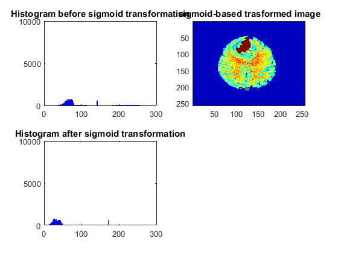
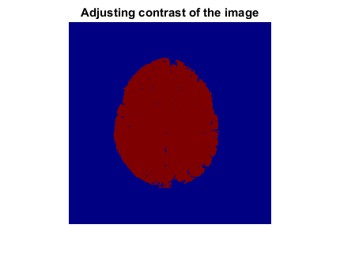
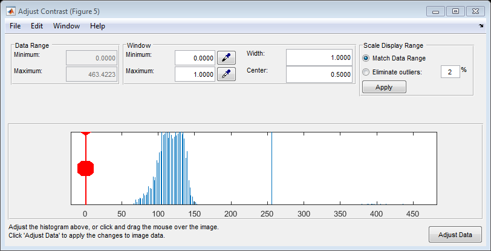
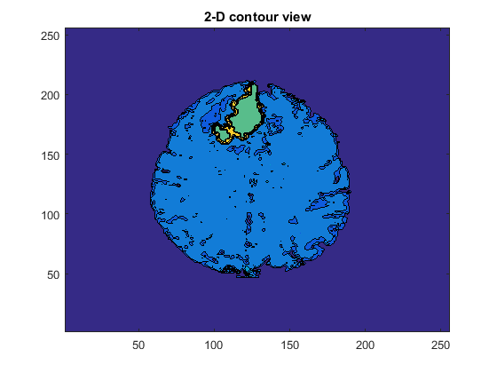
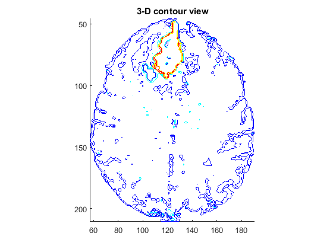
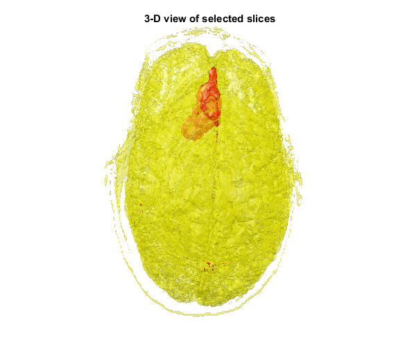
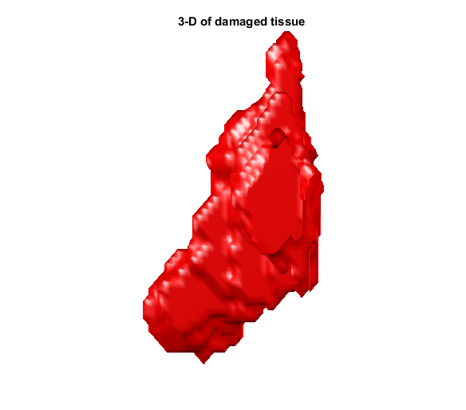

Contents
clc
clear all
close all
fname=['00000' num2str(1) '.dcm'];
info=dicominfo(fname);
que 2: To read the MRI Dicom slices
for i=1:52
if i<=9
fname=['00000' num2str(i) '.dcm'];
else
fname=['0000' num2str(i) '.dcm'];
end
trans = mri_transform(uint16(dicomread(fname)));
mri(:,:,i) = trans;
unsort_img(i,:) = [fname];
info = dicominfo(fname);
voxel_size=[info. PixelSpacing ;info. SliceThickness]';
sliceloc(i) = info. SliceLocation;
end
whos mri
figure(1)
montage(reshape(double(mri), [size(mri,1) size(mri,2) 1 size(mri,3)]));
set(gca,'clim',[0 350]);
title('Montage view of unsorted slices')
colormap(gray(256))
Name Size Bytes Class Attributes
mri 256x256x52 13631488 single
Warning: Image is too big to fit on screen; displaying at 25%

Que 3 : To sort MRI slices using slice_location
sorted_slice_loc = sort(sliceloc);
for i = 1:length(sorted_slice_loc)
for j = 1:length(sliceloc)
if sorted_slice_loc(i) == sliceloc(j)
sorted_mri(:,:,i) = mri_transform(uint16(dicomread(unsort_img(j,:))));
end
end
end
figure(2)
montage(reshape(double(sorted_mri), [size(sorted_mri,1) size(sorted_mri,2) 1 size(sorted_mri,3)]));
colormap(gray(256))
set(gca,'clim',[0 256]);
title('Montage view of sorted slices')
colormap(gray(256))
Warning: Image is too big to fit on screen; displaying at 25%

Que 4: Selecting one slice to show ROI
figure(3)
selected_slice = mri(:,:,17);
subplot(2,2,1)
image(selected_slice)
title('mri(:,:,17)')
tumor_reg = mri_segment(87,108,selected_slice);
dilated_tumor_img=dilation(tumor_reg);
subplot(2,2,2)
image(dilated_tumor_img)
title('Segmented damaged tissue')
brain_reg = mri_segment(114,111,selected_slice);
subplot(2,2,3)
image(brain_reg)
title('Segmented healthy tissue')
segmented_img = brain_reg+dilated_tumor_img;
subplot(2,2,4)
colormap(gray(256))
image(segmented_img)
title('Segmented normal & diseased region')
figure(4)
sigmoid_trans_image=mri_sigmoid(segmented_img);
colormap jet
figure(5)
b=imshow(segmented_img);
title('Adjusting contrast of the image')
colormap jet
imcontrast(b)
colormap jet
Warning: Function isinteger has the same name as a MATLAB builtin. We suggest
you rename the function to avoid a potential name conflict.
Warning: Function isinteger has the same name as a MATLAB builtin. We suggest
you rename the function to avoid a potential name conflict.
   
Que 7: To show Contour View
figure(6)
contourf(flipdim(segmented_img,1));
title('2-D contour view')
for range = 10:29;
brain_reg = mri_segment(114,111,sorted_mri(:,:,range));
segmented_img = brain_reg;
selected_set(:,:,range) = segmented_img;
end
for range = 30:34;
tumor_reg = mri_segment(87,108,sorted_mri(:,:,range));
dilated_tumor_img=dilation(tumor_reg);
brain_reg = mri_segment(114,111,sorted_mri(:,:,range));
segmented_img = brain_reg+dilated_tumor_img;
dilated_tumor_set(:,:,range) = dilated_tumor_img;
selected_set(:,:,range) = segmented_img;
end
for range = 34:36;
tumor_reg = mri_segment(55,126,sorted_mri(:,:,range));
dilated_tumor_img=dilation(tumor_reg);
brain_reg = mri_segment(114,111,sorted_mri(:,:,range));
segmented_img = brain_reg+dilated_tumor_img;
dilated_tumor_set(:,:,range) = dilated_tumor_img;
selected_set(:,:,range) = segmented_img;
end
for range = 38:40;
tumor_reg = mri_segment(67,123,sorted_mri(:,:,range));
dilated_tumor_img=dilation(tumor_reg);
brain_reg = mri_segment(114,111,sorted_mri(:,:,range));
segmented_img = brain_reg+dilated_tumor_img;
dilated_tumor_set(:,:,range) = dilated_tumor_img;
selected_set(:,:,range) = segmented_img;
end
for range = 40:47;
brain_reg = mri_segment(114,111,sorted_mri(:,:,range));
segmented_img = brain_reg;
selected_set(:,:,range) = segmented_img;
end
image_num = 34;
cm = brighten(jet(100),1);
figure('Colormap', cm)
title('3-D contour view')
contourslice(selected_set,[],[],image_num);
axis ij tight
daspect([1,1,3])
 
Que 9: Generating 3-D of brain slices
Ds = imresize(selected_set,1,'nearest');
Ds = flipdim(Ds,1);
Ds = flipdim(Ds,2);
Ds = permute(Ds,[3 2 1]);
voxel_size2=voxel_size([1 3 2]).*[4 1 4];
white_vol = isosurface(Ds,80);
gray_vol = isosurface(Ds,200);
h=figure('visible','off','outerposition',[0 0 600 600]);
title('3-D view of selected slices')
patch(white_vol,'FaceColor','y','EdgeColor','none',...
'FaceAlpha',.3);
patch(gray_vol,'FaceColor','r','EdgeColor','none');
view(150,0);
daspect(1./voxel_size2);
axis tight;
axis off;
camlight;
camlight(-80,-10);
lighting phong;
movegui(h,'center');
set(h,'visible','on');
Ds = dilated_tumor_set;
Ds = flipdim(Ds,1);
Ds = flipdim(Ds,2);
Ds = permute(Ds,[3 2 1]);
voxel_size2=voxel_size([1 3 2]).*[4 1 4];
white_vol = isosurface(Ds,120);
gray_vol = isosurface(Ds,200);
h=figure('visible','off','outerposition',[0 0 600 600]);
title('3-D of damaged tissue')
patch(white_vol,'FaceColor','r','EdgeColor','none');
patch(gray_vol,'FaceColor','r','EdgeColor','none');
view(150,0);
daspect(1./voxel_size2);
axis tight;
axis off;
camlight;
camlight(-80,-10);
lighting phong;
movegui(h,'center');
set(h,'visible','on');
 
Function -mri_transform
Function-dilation
Function- mri_segment
Function- mri_sigmoid